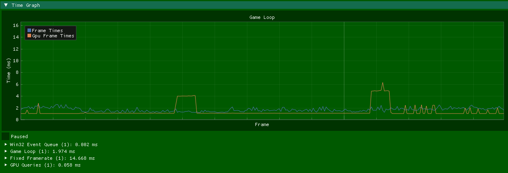
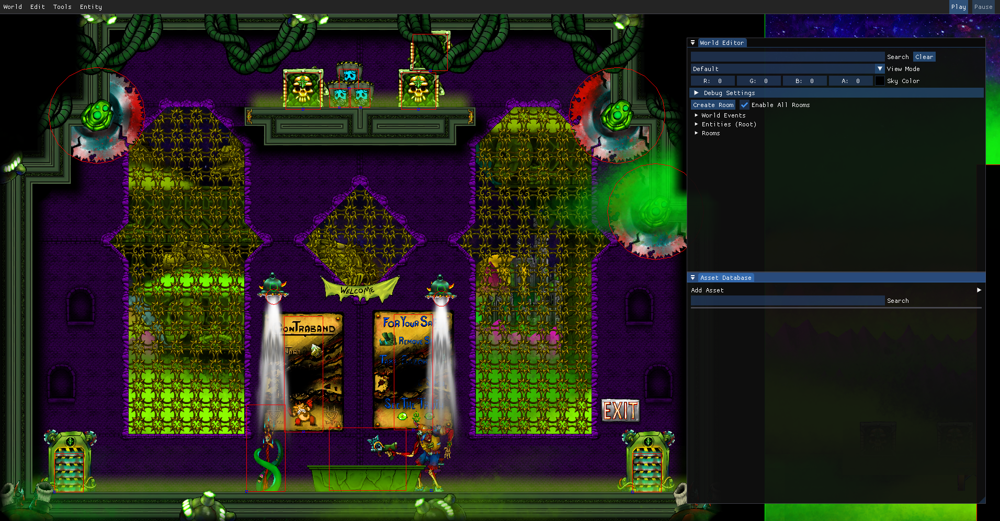
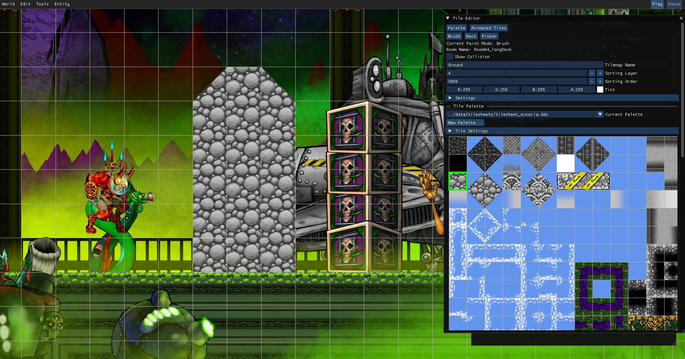
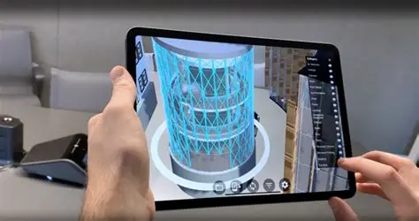
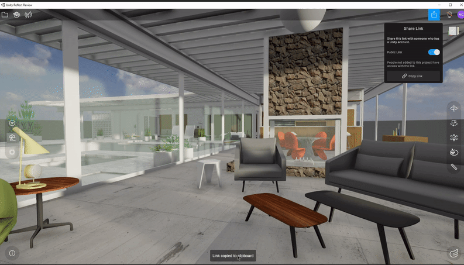
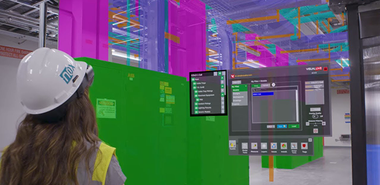
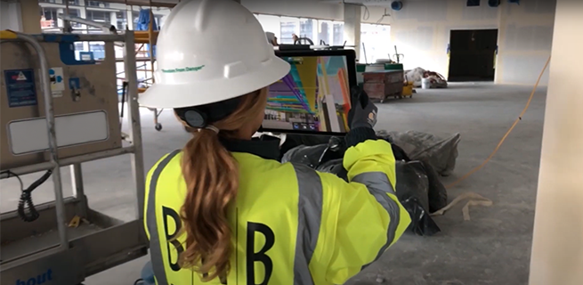
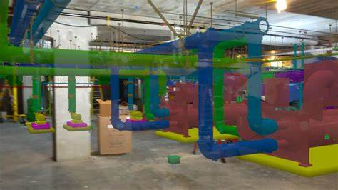
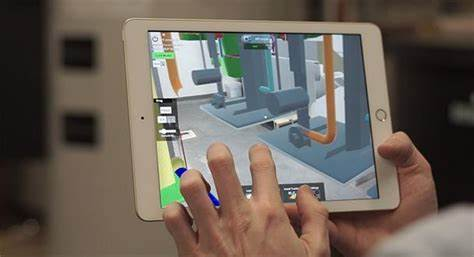

Engine & Game Developer | C++ / C#
I am an engine and game developer with 10+ years of experience across custom engines, AR/VR, and engineering leadership. My work spans rendering, asset pipelines, serialization, animation, and editor tooling in C++ and C#. I built the custom C/C++ engine for Cultist Astronaut and currently develop engine systems and user interactions as Core Engineer at Sonder. Previously, I co-founded VisualLive, which was acquired by Unity Technologies in 2021, and led a team of 8 developers at Unity.
I am currently open to contract, freelance, and employment opportunities involving game development, engine architecture, and tooling.
Core Engineer | Remote | March 2026 – Present
Sonder is a 3D social platform where people explore shared spaces and navigate conversations through interactive portals and avatar crowds. I develop engine systems, rendering features, and user interactions in its custom C# engine.
Due to NDA restrictions, I am unable to share videos or pictures of Sonder at this time.
This is a custom profiler built using a macro-based API for marking regions in code. It supports nested regions and renders them as a hierarchical tree in the UI.

The editor allows us to add, remove, and edit entities. Our game makes heavy use of layers and parallax, so we’ve built tools to adjust the sorting order of sprites and meshes. The editor also supports play, pause, and stop functionality at any point during editing. Entities are serialized using a custom type info system, automatically generated by a metaprogram that parses our C structs.


As Software Engineering Manager, Digital Twins at Unity Technologies from March 2021 to April 2023, I led and grew a team of 8 developers. I created a Reflect + VisualLive application for iOS and Android, implemented features using Mixed Reality Toolkit, AR Foundation, and Azure Spatial Anchors, and maintained VisualLive products for the web, HoloLens, iOS, and Android.


VisualLive is an AR/VR solution for the AEC (Architecture, Engineering, and Construction) industry, designed to run on both the HoloLens and iPad. This cloud-based platform enables users to process and visualize complex 3D models directly on the job site.
As Chief Technology Officer from 2017 to 2021, I hired and led a team of 5 developers. My responsibilities included:



